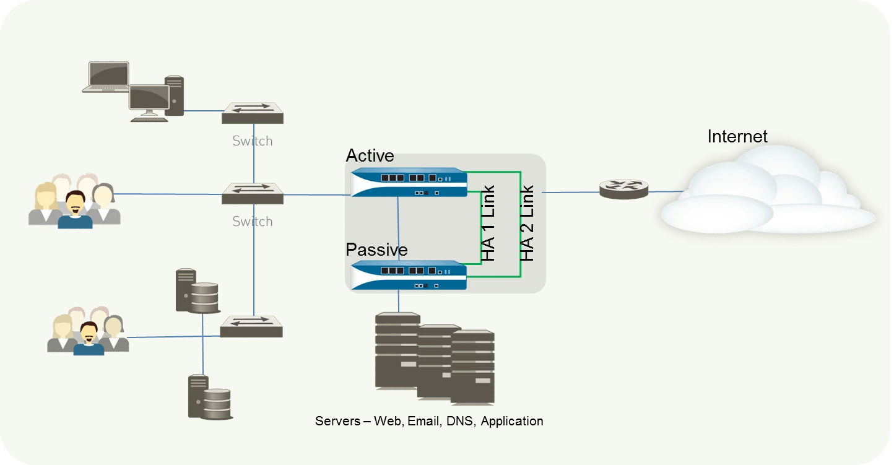

请访问原文链接：Palo Alto PAN-OS Active/Passive HA 配置文档 查看最新版。原创作品，转载请保留出处。
作者主页：sysin.org
防火墙 HA 配置系列文章：
- Cisco Firepower FTD HA 配置文档
- FortiGate FGCP HA 配置文档
- Palo Alto PAN-OS Active/Passive HA 配置文档
- Juniper SRX JSRP 配置文档
1. 概述：HA 模式
您可以按照以下两种模式来设置防火墙的 HA：
- 主动/被动 — 一个防火墙主动管理通信，而另一个防火墙保持同步并随时准备在主动设备发生故障时转换为主动状态。在此配置中，两个防火墙共享相同的配置设置，一台主动管理通信，直到发生路径、链接、系统或网络故障。当主动防火墙发生故障时，被动设备将无缝接管并实施相同的策略，以维持网络的安全性。主动/被动高可用性在 Virtual Wire、第 2 层和第 3 层部署中受支持。
- 主动/主动 — HA 对中的两个防火墙都是主动设备，同时处理通信，并且同步处理会话设置和会话所有权。两个防火墙会分别获取会话表及路由表，并彼此进行同步。主动/主动高可用性在 Virtual Wire、第 2层和第 3 层部署中受支持。处于主动/主动 HA 模式的防火墙不支持 DHCP 客户端。而且，仅主动-主要防火墙具备 DHCP 中继功能。主动-辅助防火墙会丢弃其收到的 DHCP 广播数据包。
主动/主动配置不会加载平衡通信。虽然可通过发送通信至对等加载共享，但不会发生负载平衡。可通过 ECMP、多个 ISP 及负载均衡器加载共享会话至两道防火墙。
在决定是使用主动/被动还是主动/主动模式时，请考虑以下差异：
- 主动/被动模式设计简单；该模式下，能更轻松地解决路由及通信流问题。主动/被动模式支持第 2 层部署；主动/主动模式不支持。
- 主动/主动模式需要能构建复杂性更高的网络的高级设计概念 (sysin)。根据实施主动/主动 HA 的方式，可能需要额外配置，如激活两道防火墙的联网协议、复制 NAT 池、部署浮动 IP 地址等，从而提供相应的故障转移。由于两个防火墙均在主动处理通信，防火墙使用会话所有者及会话设置概念执行第 7 层内容检查。如果防火墙分别需要各自的路由实例，且您需要防火墙始终输出完整、实时的冗余，则建议您使用主动/主动模式。主动/主动模式下，故障转移的速度更快，此外，两个防火墙均会主动处理流通信，因此，较之主动/被动模式，其能更好地处理最大通信流。
主动/主动模式下，HA 对可用于临时处理通信，且其处理的通信量较一个防火墙正常情况下处理的更大。但这并非绝对的，原因是如果一个防火墙发生故障，流量便会重定向流至HA 对中的另一道防火墙。您的设计必须让另一个防火墙能够处理最大通信负载，同时启用内容检查。如果设计为另一个防火墙订阅的通信处理能力过大，则可能导致高延迟和/或应用程序故障。
本例使用主动/被动模式（参考拓扑如下图）。

2. 不同步的配置
详细参见 PAN-OS® Administrator’s Guide, Reference: HA Synchronization
以下部分的配置无法通过 HA 同步配置，必须在节点上独立配置
-
Device > Setup（管理接口、主机名、域名、时区、DNS、NTP、SNMP等）
-
Device > Scheduled Log Export
-
Device > Software
-
Device > GlobalProtect Client
-
Device > Dynamic Updates
-
Device > Licenses
-
Device > Support
-
Device > Master Key and Diagnostics
-
Device > High Availability（HA 配置页面）
-
Reports, logs, and Dashboard Settings
3. 创建 HA 的要求
- 防火墙型号相同
- PAN-OS 版本相同
- 接口类型相同：管理接口、HA1、HA2
- 许可相同
4. 接口
PA-800 系列及以上有专用 HA1 和 HA2 接口
PA-500、PA-200 及 PA-VM 需使用 in‐band 接口作为 HA 接口，至少 2 个（Network–Interface–Ethernet，创建 Interface Type 为 HA 的接口）
HA 接口可以使用网线直连
For firewalls without dedicated HA ports such as the PA‐200, PA‐220, and PA‐500 firewalls, as a best practice use the dataplane port for the HA port, and use the management port as the HA1 backup.
需要配置以下接口
- Control link (HA1) //专有 HA1 或者 in‐band 接口
- Control link (HA1 Backup) //通常使用管理接口
- Data link (HA2) //专有 HA2 或者 in‐band 接口
- Data link (HA2 Backup) //可以不配置 (sysin)
接口选项
- 有专有 HA 接口：
1 | HA1: Dedicated HA1 port |
- 无专有 HA 接口：
1 | HA1: In‐band port |
5. 配置 HA（分别在主备节点配置）
前提配置：
- 管理接口配置
- 无专有HA接口需要配置 2 个 In-band 接口作为 HA 接口
- 启用管理接口 Ping，Device > Setup > Interfaces
（1）Device > High Availability > General
右侧
- Control link (HA1) //专有 HA1 或者 in‐band 接口，需要配置 IP
- Control link (HA1 Backup) //通常使用管理接口
- Data link (HA2) //专有 HA2 或者 in‐band 接口，若为直连接口默认 Transport 为 Ethernet，无需配置 IP。若需要路由需要将 Transport 选为 IP 或者 UDP，并且配置 IP 地址信息。勾选"Enable Session Synchronization"。
- Data link (HA2 Backup) //可以不配置
左侧
- Setup
- Group ID：主备节点相同例如为 1
- Mode：Active Passive
- 勾选 Enable Config Sync
（2）Active/Passive Settings
可以保持默认
（3）Election Settings
Device Priority：取值范围 0-255，数值越小优先级越高，例如 active 节点填写 100，passive 节点则需要大于 100 如 200
（4）Setup
- 勾选 Enable HA
- Peer HA1 IP Address：填写对端节点
- Backup Peer HA1 IP Address：填写对端节点
实际测试以上步骤并无严格顺序要求。
保存配置：Commit
6. 同步配置
- 分别在主备节点添加 High Avaliabilty widget.
- Dashboard > Widgets > System > High Avaliabilty
- 在 Active 节点点击 Sync to peer
- 以后配置将自动同步
7. 定义 HA Failover 条件
Device > High Availability > Link and Path Monitoring
分别添加 Link Group 和 Path Group
8. Failover
Device > High Availability > Operational Commands
点击 Suspend local device
在 Dashboard 的High Availability widget 查看状态
点击 Make local device functional，此时节点将变为 passive 状态
9. 相关产品下载
下载 PAN-OS：
- Palo Alto PAN-OS 10 for ESXi & KVM - 全球首个基于机器学习的新一代防火墙
- Palo Alto PAN-OS 11.0 for ESXi & KVM - ML 驱动的 NGFW

文章用于推荐和分享优秀的软件产品及其相关技术，所有软件默认提供官方原版（免费版或试用版），免费分享。对于部分产品笔者加入了自己的理解和分析，方便学习和研究使用。任何内容若侵犯了您的版权，请联系作者删除。如果您喜欢这篇文章或者觉得它对您有所帮助，或者发现有不当之处，欢迎您发表评论，也欢迎您分享这个网站，或者赞赏一下作者，谢谢！
 支付宝赞赏
支付宝赞赏
 微信赞赏
微信赞赏
赞赏一下